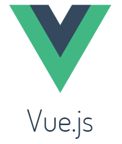

我真是太折腾了,也没能坚持下去,去年陆陆续续用
hexo写了一段时间的博客,最终没能坚持下去!
关键字
pelican
markdown
github
搭建步骤
最好的方式莫过于官方文档: 官方入坑道路. 下面的步骤都是很简单,网上一堆教程,我这里就不多说了,记下这些步骤.
// 如果需要使用markdown这个高逼格的语法去写博客
# pip install pelican markdown typogrify
# mkdir pingbook.top
# cd pingbook.top
# pelican-quickstart
安装上面的步骤操作下来后,弹出如下的提示让你配置,这些配置都可以以后在pelicanconf.py修改,直接默认回车一路下去就好了!
pelican-quickstart执行命令后，会提示输入博客的配置项，除了少数几个必填以外，其它都可以选择默认，而且都可以在pelicanconf.py文件中进行更改，所以你可以随意选择。
1. Where do you want to create your new web site?[.] (你想在哪里创建你的网站，默认为当前目录)
2. What will be the title of this web site?(网站的标题是什么)
3. Who will be the author of this web site?(网站的作者是谁)
4. What will be the default language of this web site? [en] (网站的默认语言是),这里我们写'zh'中文
5. Do you want to specify a URL prefix? e.g., http://example.com(Y/n) (是否指定域名),Y
6. What is your URL prefix?(see above example; no trailing slash)(输入域名，不能包含反斜杠'/'),http://moelove.info
7. Do you want to enable article pagination?(是否启用文章分页)
8. Do you want to generate a Makefile to easily manage your website?(是否生成一个Makefile来管理网站(这里我建议生成，因为会比较方便的))
9. Do you want an auto-reload & simpleHTTP script to assist with theme and site development?(是否想有一个自动加载的小型http脚本用来修改主题和站点开发)
10. Do you want to upload your website using FTP?
11. Do you want to upload your website using SSH?
12. Do you want to upload your website using Dropbox?
13. Do you want to upload your website using S3?
命令使用
由于本人使用的是windows,这里我使用了两个命令:
# pelican content # 根据content中的内容，生成静态网站到output目下
# cd output && python -m pelican.server
# cd output && python -m SimpleHTTPServer
主题和插件安装
theme安装
下载主题文件,添加配置: THEME = './pelican-themes/gum'
插件安装
下载插件文件,添加如下配置:
PLUGIN_PATHS = [u"pelican-plugins"]
PLUGINS = [u"sitemap",u"gzip_cache",u"neighbors",u"related_posts"]
SITEMAP = {
'format': 'xml',
'priorities': {
'articles': 0.7,
'indexes': 0.5,
'pages': 0.3
},
'changefreqs': {
'articles': 'weekly',
'indexes': 'daily',
'pages': 'monthly'
}
}
字体更改
1.下载字体文件,到网站的静态文件夹内,具体可以参考让wordpress主题绕开对google的依赖.不过此种方法也有些问题.把静态资源放到Github上加载时间也没别之前好多少.
2.把Google的静态公共库替换为国内的公共库.例如我的给替换成360的镜像地址.其实这种方法也有些弊端,例如国外用户访问就会出现加载过慢的问题.但是毕竟我们在’朝内’,所以就换成360的资源库吧.操作如下
在对应的主题的css文件中修改对应的google font切换到国内的镜像.例如本周使用的是gum主题,转到对应的css文件gumby.css,修改如下:
#static/css/目录下css文件中,例如gumby.css
@import url(//fonts.googleapi.com/css?family=Overlock:400,700,900);
@import url(//fonts.googleapi.com/css?family=PT+Mono);
#替换为
@import url(//fonts.useso.com/css?family=Overlock:400,700,900);
@import url(//fonts.useso.com/css?family=PT+Mono);
国内其他开公共库: 百度CDN公共库; 新浪云计算CDN公共库; 又拍云JS库CDN服务; 七牛云静态文件CDN;
高级语法
静态图片
新建一个目录在content下面,例如images,然后在pelicanconf.py设置如下:
STATIC_PATHS = ['images','downloads']
,在对应的md中可以这样写语法:

部署
部署到github上
- 新建一个仓库,仓库名称和你的昵称相同或者创建一个组织
- 使用如下命令上传
cd output
git init
git add .
git remote add origin 仓库git地址
git push -u origin master
Relate Articles